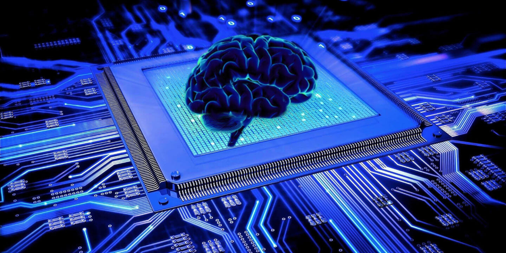

Aritificial Intelligence
Author: Wayne

Artificial intelligence (AI), sometimes called machine intelligence, is intelligence demonstrated by machines, in contrast to the natural intelligence displayed by humans and other animals.
In computer science AI research is defined as the study of "intelligent agents": any device that perceives its environment and takes actions that maximize its chance of successfully achieving
its goals.Colloquially, the term "artificial intelligence" is applied when a machine mimics "cognitive" functions that humans associate with other human minds, such as "learning" and "problem solving".
AI application
Video games

In video games, artificial intelligence is routinely used to generate dynamic purposeful behavior in non-player characters (NPCs). In addition, well-understood AI techniques are routinely used for
pathfinding. Some researchers consider NPC AI in games to be a "solved problem" for most production tasks. Games with more atypical AI include the AI director of Left 4 Dead (2008) and the neuroevolutionary
training of platoons in Supreme Commander 2 (2010).
Automotive

Advancements in AI have contributed to the growth of the automotive industry through the creation and evolution of self-driving vehicles. As of 2016, there are over 30 companies utilizing AI into the creation of
driverless cars. A few companies involved with AI include Tesla, Google, and Apple. Many components contribute to the functioning of self-driving cars. These vehicles incorporate systems such as braking, lane
changing, collision prevention, navigation and mapping. Together, these systems, as well as high performance computers, are integrated into one complex vehicle. Recent developments in autonomous automobiles have
made the innovation of self-driving trucks possible, though they are still in the testing phase. The UK government has passed legislation to begin testing of self-driving truck platoons in 2018.[287] Self-driving
truck platoons are a fleet of self-driving trucks following the lead of one non-self-driving truck, so the truck platoons aren't entirely autonomous yet. Meanwhile, the Daimler, a German automobile corporation, is testing the Freightliner Inspiration which is a semi-autonomous truck that will only be used on the highway.[288]